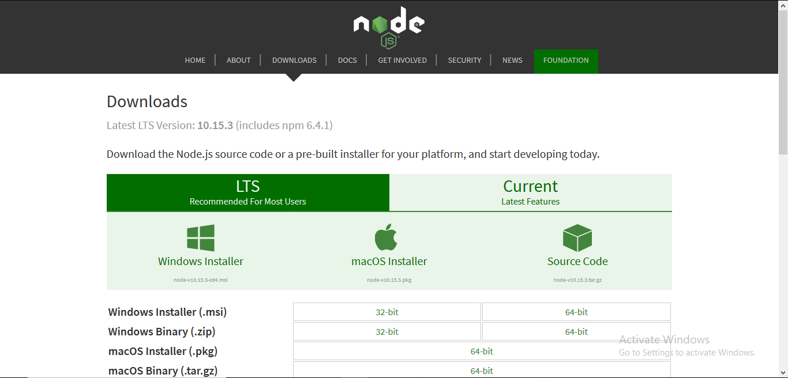

HELLO WORLD, The Node can be installed in multiple ways on a computer. The approach used by you depends on the existing development environment in the system. There are different package installer for different environments. You can install Node by grabbing a copy of the source code and compiling the application. Another way of installing Node is by cloning the GIT repository in all the three environments and then installing it on the system.

Installing Node.js on your Windows
Step-1: Downloading the Node.js ‘.msi’ installer.
The first step to install Node.js on windows is to download the installer. Visit the official Node.js website i.e)
https://nodejs.org/en/download/ and download the .msi file according to your system environment (32-bit & 64-bit). An MSI installer will be downloaded on your system.
Alternatively You can also click here to download NodeJs from its official website

Step-2: Running the Node.js installer.
Now you need to install the node.js installer on your PC. You need to follow the following steps for the Node.js to be installed:-
Double click on the .msi installer.
The Node.js Setup wizard will open. Welcome To Node.js Setup Wizard.
Select “Next”

Step-3: End-User License Agreement.
After clicking “Next”,
End-User License Agreement (EULA) will open.
Check “I accept the terms in the License Agreement”
Select “Next”

Step-4: Destination Folder
Set the Destination Folder where you want to install Node.js &
Select “Next”

Step-5: Custom Setup
Select “Next”

Step-6: Install NodeJs
Ready to Install Node.js.
The installer may prompt you to “install tools for native modules”.
Select “Install”

Step-7: Install NodeJs
Installing Node.js. Do not close or cancel the installer until the install is complete Complete the Node.js Setup Wizard.
Click “Finish”
Step 8: Verify that Node.js was properly installed or not.
To check that Node.Js was completely installed on your system or not,
you can run the following command in your command prompt or Windows Powershell and test it:-
Microsoft Windows [Version 10.0.22621.2428]
(c) Microsoft Corporation. All rights reserved.
C:\Users\newky>node -v|
Your Node.Js version will be displayed as below: Microsoft Windows [Version 10.0.22621.2428]
(c) Microsoft Corporation. All rights reserved.
C:\Users\newky>v18.16.1|